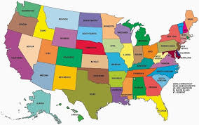
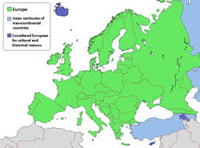
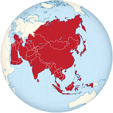

Shtetet e Bashkuara të Amerikës[h] (shpesh njohur si Shtetet e Bashkuara, SHBA, ose informalisht Amerika) janë një republikë federale kushtetuese, e përbërë prej 50 shtetesh dhe një qarku federal. Vendi shtrihet kryesisht në Amerikën e Veriut, ku 48 shtete të ngjitura dhe Washington, D.C., qarku i kryeqytetit, ndodhen midis oqeaneve Atlantik dhe Paqësor, në kufi me Kanadanë në veri dhe Meksikën në jug. Shteti i Alaskës ndodhet në veriperëndim të kontinentit dhe kufizohet me Kanadanë në lindje dhe Rusinë në perëndim përtej Ngushticës së Beringut. Shteti i Hawait është arkipelag në mes të Paqësorit. SHBA-të gjithashtu zotërojnë disa territore, treva ishullore, në Karaibe dhe Oqeanin Paqësor.
Evropa (gr. Eurṓpē Εὐρώπη ) është një nga shtatë kontinentet tradicionale politike, dhe një pjesë e kontinentit gjeografik të Euroazisë. Evropa rrethohet në veri nga Oqeani i Ngrirë i Veriut, në perëndim nga Oqeani Atlantik, në jug nga Deti Mesdhe, dhe në juglindje nga Malet Kaukaz, Deti i Zi dhe ngushticat që e lidhin atë me Detin Mesdhe. Në lindje, Evropa kryesisht ndahet nga Azia nga ndarja ujore e Maleve Urale, Lumi Ural, dhe Deti Kaspik.
Azia është kontinenti më i madh dhe më i populluari i Tokës, i vendosur kryesisht në hemisferat lindore dhe veriore. Ajo ndan masën tokësore kontinentale të Euroazisë me kontinentin e Evropës, dhe masën kontinentale të Afro-Eurazisë me Afrikën dhe Evropën. Azia mbulon një sipërfaqe prej 44,579,000 kilometra katrorë, rreth 30% të sipërfaqes totale të vendit të tokës dhe 8.7% të sipërfaqes totale të Tokës. Kontinenti, i cili ka qenë prej kohësh shtëpia e shumicës së popullsisë njerëzore, ishte vendi i shumë prej qytetërimeve të para. 4.7 miliardë banorët e saj[1] përbëjnë afërsisht 60% të popullsisë së botës
